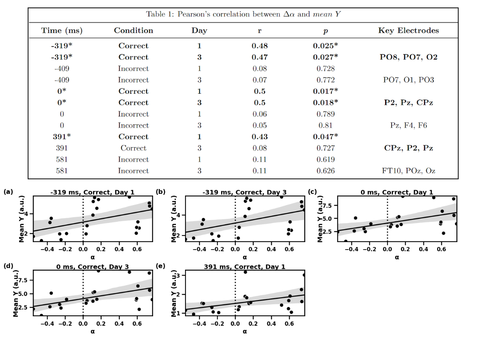
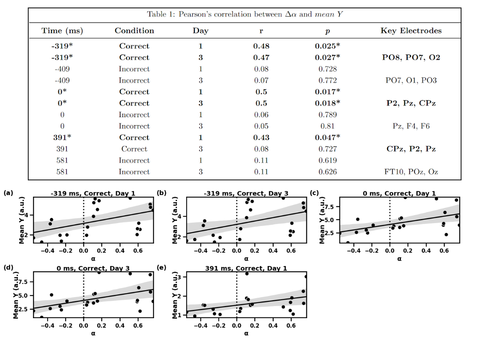

Methodology (Technical Skills)
This project integrated machine learning and advanced computational modeling to link brain activity (EEG) with behavioral adaptation, moving beyond traditional univariate methods.


Multivariate neural signatures were deduced using Linear Discriminant Analysis (LDA) classifiers, trained separately on correct and incorrect whole-scalp EEG activity to identify features best distinguishing between learning states on Day 1 and Day 3. The classifier worked by optimizing a hyperplane in sequential 70 ms time windows to maximize separation between the two days. The performance of this distinction was measured by the Az score (Area Under the ROC Curve); time points with high Az scores indicate a neural correlate where significant learning-related change occurred. The classifier's continuous output, the discriminant score (y), was extracted as the neural signature. These signatures were spatially interpreted using scalp maps derived from the classifier's weight vector (importance of each electrode) via Haufe's transformation over the -450 ms pre-response to 1000 ms post-response period.
To quantify the behavioral aspect of learning, a Reinforcement Learning Drift-Diffusion Model (RLDDM) was employed, which extends the standard DDM to include the impact of feedback (Q-learning) on future decisions. This model estimated the learning rate for each participant, a core parameter quantifying a participant's responsiveness to reward. The behavioral measure of adaptive learning was calculated as the change in learning rate between Day 3 and Day 1. The functional relevance of the neural correlates was then determined by using Pearson's correlation to test for a linear relationship between the mean discriminant score at the highest Az peaks and the magnitude of adaptive learning.
III. Technical Methodology & Skills
1. Neural Data Classification (Multivariate EEG Analysis):
- Technique: A supervised single-trial analysis using Linear Discriminant Analysis (LDA) was employed to deduce multivariate neural signatures.
- Process: Separate classifiers were trained to identify whole-scalp spatiotemporal EEG activity that best discriminated between learning on Day 1 and Day 3 for both correct and incorrect trials.
- Output: The continuous classifier output, or discriminant score, was extracted as the neural signature for correlation.
2. Behavioral Modeling (Computational Neuroscience):
- A Reinforcement Learning Drift-Diffusion Model (RLDDM) was used, which models both decision-making (evidence accumulation) and learning-related parameters.
- Focus Parameter: The RLDDM's learning rate was derived to quantify how responsive a participant was to feedback, as this parameter is highly relevant to neural processes that update belief structures based on feedback.
- Measure of Adaptation: The change in learning rate between Day 1 and Day 3 was calculated and used as the behavioral measure of adaptive learning.
3. Functional Correlation:
- The neural signature was correlated with the change in the learning rate using Pearson's correlation to establish functional relevance.
 
